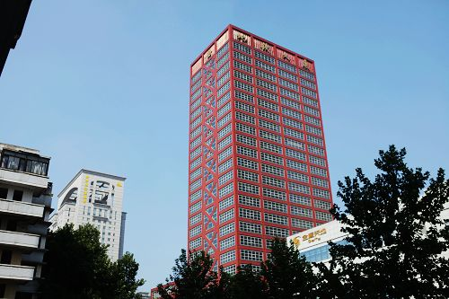
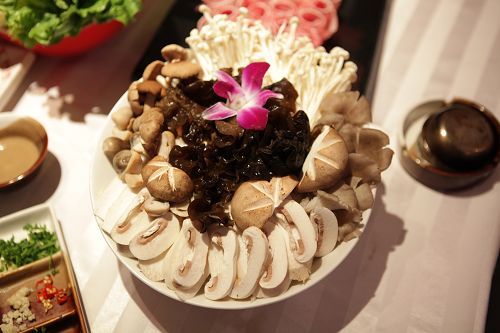
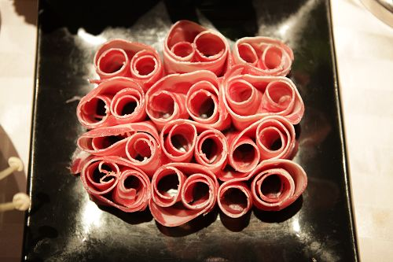
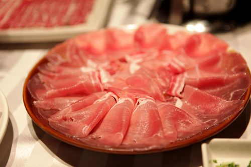
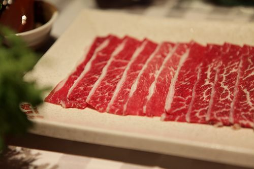
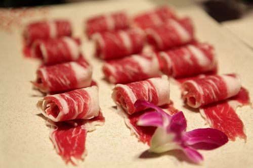
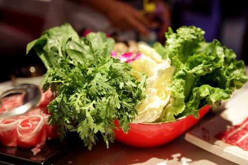
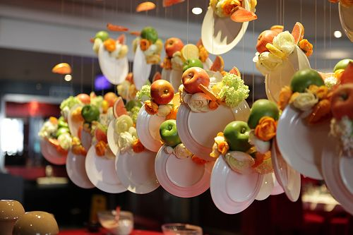
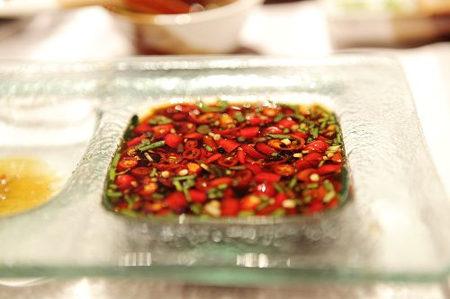

“曲折”放假时间表终于开始了，星期六休息一天，接着工作三天，然后休息三天，之后继续工作到国庆节前。上午和同事外出办事，回家也早。于是为家中植物修剪发型，阳台立刻清爽了许多。午餐又一次去了“品尚豆捞”，因为好喜爱它的就餐环境和美食。它位于地铁大厦对面的龙世大厦三楼，去年曾在那里吃过磨石泡泡鱼火锅，如今被“品尚”替代。
什么时候女友们聚餐，可以去这里一试，各有各的小火锅，卫生，口味各取所需。环境也不错，不用扯着嗓门喊话，好象吃完后也没把餐厅里的火锅味带回家：P
南京地铁大厦，据说全部是钢铁结构，从未进去参观过，不知隔音效果可好？

午餐时间，客人并不很多。餐厅里有两棵好看的人造银杏树，沙发座很有安全感，对于一个重口味常常光顾火锅店的人来讲，相比之下这样的环境让人更舒服。火锅好象不能登上大雅之堂？谁谁谁请客，会选择去火锅店吗？如果是这样的火锅店，倒可以考虑请爱火锅的客人去。


各种蘑菇是我喜爱的蔬菜系列之一。

钻石羔羊肋卷。钻石.....想来是从口感差异起的名字，因为...


因为前一晚我们5个人点了4盘“极品羔羊肉”，切工了得，薄薄的，但吃起来一点不绵，即使细微的弹性也足以说明它有别于其他品名的羊肉，且毫无膻味儿，不过这不适合“膻味儿”的粉丝们。

至尊雪花肥牛，烧熟后相对比较厚。

隆重推荐“日式4A黑毛和牛肉”，与上面的肥牛相比，咀嚼起来能感到弹性，每一片的两边都带点儿肥，很嫩的口感。

如果不是请客的话，可以单点蔬菜，最爱里面的唐蒿菜和菠菜。

鲈鱼......恩.....没有我从菜场直接买回家烹饪的好吃，可能是事先准备好的，新鲜劲儿没了。

有很多种底锅可供选择，询问了所有底锅即使是麻辣型的也不辣。最爱“炫一色”底锅，里面放了小青椒圈和小香葱，既清新又开味。餐厅新推出的底锅。

调配料在自助区自取，十多种，让人眼花缭乱。好些火锅店都会备有芝麻酱，到目前我还没体会到该调料的美好，所以几乎从来不会主动点芝麻酱。


自助区上方吊着许多让人看了大发食欲的果蔬拼盘的装饰。


南京的澳门豆捞与澳门豆佬并不是同一家连锁，王府大街的澳门豆佬是独门经营，而九华山、操场门和江宁的澳门豆捞是连锁店，我更偏爱澳门豆捞。
体验过许多火锅，以及各个餐馆的调料，最爱“澳门豆佬”各种“滑”，品尚的“滑”还是差了些。以及它家的配料，很简单，小红圈辣椒+餐厅特制酱油，即可实现美味无限。所以，在品尚，便借鉴了这种搭配，并加了少许的醋和香葱，这种迷你身材的香葱是不是只有南方才有？


5 Responses to “吃得过瘾。”
2010-09-19
现在澳门豆捞在黑龙江路33号也新开了一家
澳门豆捞(大公馆店),黑龙江路33号
昨天刚去吃
好像澳门豆捞是浙江的餐饮企业
2010-09-19
多写点吃的～哈哈～
2010-09-20
吃完了长多少热卡？
_
2010-09-21
下月要回南京了，一定去尝尝看。
2010-09-27
麻酱算得北方出产的调味料了，也正应了那句话“橘生淮南则为橘，生于淮北则为枳”。北京的涮羊肉必须用铜锅、木炭，加麻酱做调料才是正宗搭配,很美味,下次来不妨尝一尝。还有麻酱烧饼也很好吃。
Leave A Reply
存档只读，评论已关闭。